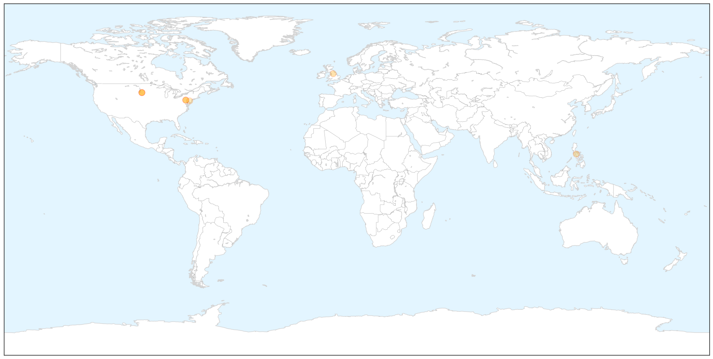

Toggle navigation
Early Warning
Return to Dashboard
Points of Interest
About the Project
Measles
Jan 02, 2015
Compare to:
-
Dengue Fever
Hemmorhagic Fever
Mold/Fungal Infection
Influenza
Meningitis
Pertussis / Whooping Cough
Middle East Respiratory Syndrome
Cholera
Hepatitis
Chikungunya
Yellow Fever
Bubonic Plague
West Nile Virus
Swine Flu
Ebola
Unknown
Mumps
30 Day Trends
Web: 0
alerts
, 0
warnings
Twitter: 0
alerts
, 0
warnings
Top Articles:
0.991
Philadelphia Health Officials Warn of Possible Measles Exposure at Please Touch Museum, Suburban Pharmacy
0.988
Measles Exposure Likely, Warns PA Health Department
0.965
SD's measles count up to nine
0.954
Possible Measles Outbreak Announced At Major Museum
0.887
Possible Measles Exposure at Kids' 'Please Touch Museum'
0.825
Daugaard urges vaccinations
0.791
False alarm on measles, Pa. says
0.763
More Measles Cases Confirmed In South Dakota
Top Tweets:
No tweets found for Jan 02, 2015
Web/News Articles
X
Tweets
X
Article Locations
X

Article Confidences
X